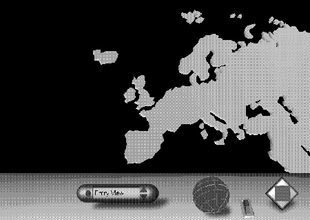
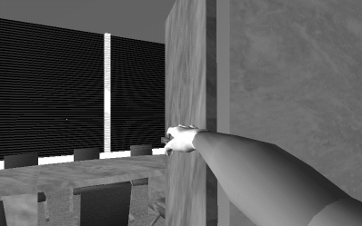
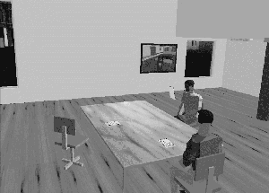

Diplomacy 2000
The Game of Skill and Cunning Negotiation in Cyberspace
by Nic Chilton
A storm is about to whip up in Japan with news of the impending
release of Diplomacy 2000, the new multi-player Internet plug-in
game for the Super-VR Computer Console. Console owners will be
able to don their cyber-visors and not only immerse themselves
in the 3D Cyberspace of the Global Computer Web, but engage in a
game of international intrigue with players from around the
world. Computer suppliers and games players in the United States
and Europe will be avidly watching the Japanese release to
predict how it will go down when it gets its western release
next year. It seems a whole new generation of games players are
about to be introduced to the world of Diplomacy.
Diplomacy 2000 was developed as a continuation of Avalon Hill's
policy of releasing computerised versions of their board games.
What makes this game different is that it their first game to be
released on the Super-VR, and what a game. The Super-VR's main
selling point was the ability to allow users to fly around the
Global Computer Web in three dimensions in practically real
time. The special rendering hardware of the Super-VR and its
built-in 3D model database ensure it can work reliably over
standard ISDN, and even the 28.8k modems still in use. The game
cleverly uses the models to create a three dimensional board and
pieces, as well as full body representations of the seven
leaders. You can invite other players into secret rooms, pull up
maps out of mid-air, and see the outcome of different scenarios
with the press of a button. They have even built in a games hall
where you can arrange to meet others, post announcements for new
games, see what games are about to start, or just hang around.
This is one monster of a game, and Avalon Hill seem to have
chosen the perfect company in CyberWave, to do justice to a
classic board game.
The Review
We have got hold of a pre-release PROM version that is loaned
out to games testers and reviewers, and I can tell you it has
caused quite a stir in the office - I have never seen so many
people simultaneously offer to work over the weekend without
pay! Still, it was very useful to help me examine the
multi-player capabilities when compiling this review for you,
which I am sure you are anxious to hear. To start off with I
will examine the different components that make the game and
then look at the overall feeling the game presents.
The Interface
The games interface makes good use of the Super-VR effectors
(the cyber-visor head mounted display and a wired cyber-glove
that links your real hand to your virtual one) that comes with
the console that allows you to fully experience flying over
landscapes or sitting in virtual rooms. The cyber-visor allows
you to view the game world in three dimensional stereo (since it
has a screen for each eye) and its built in headphones and
microphone allow you to communicate, whether secretly to one
player in the corner of the room or to everyone in the Game
Hall. Every player in the game has their own virtual body
(chosen from one of the hundreds built in into the machine), so
if you look down whilst wearing your cyber-visor you will see a
pair of feet! The cyber-glove, which you can wear on either hand
(since they have included an option for handedness!) is
connected to your virtual hand in the game. This way you can
pick up objects or choose options from the pop up menu,
including a 3D keyboard to type in your orders away from prying
eyes!
The Diplomacy Room

This is the place where you play the game, and undoubtedly where
most of you want to go to. The room is very simple in its
design, and isn't really a 'room'. It is a big black space with
a three dimensional version of the Diplomacy map at its centre.
This is all you really need since during a game you will either
be concentrating on the map or off negotiating with other
players. During the game I played all seven players floated
around the edges of the board, with the Games Master appearing
just before each deadline to ask for orders. The Games Master is
not a real person, but part of the program. There is a built in
option to allow a real person to play the role, though I do not
know if this will be used in practice.
The Games Hall
This will undoubtedly be the busiest place in the game, since it
is the place you arrive at when you start a session. Many people
will go straight off to games, but I do not doubt that others
will stay around to meet new people and join in discussions. The
hall itself, is a large building set in the middle of park land.
There are various activities going on in the different areas of
the hall: in one corner there are master classes where people
new to diplomacy can learn tactics, which is next to the
debating club discussing a variety motions; in another is the
new games testing ground where you can try out new games before
they are on general release. There are a whole variety of other
areas in the building, but since these can change (the game has
been designed to be very fluid) depending on the participants,
then I will not describe them here. This is one of the beauties
of the game since it gives it a life of its own, and you will
wander around the grounds to see what's new. This game is far
more than Diplomacy in 3D, its a whole new environment, a global
convention that goes on 24 hours a day and 365 days a year! You
can join and leave, as many times you like, and for as often as
you like. Its flexibility allows you to be completely
spontaneous, so if you have a board game you would like to play,
then bring it along I am sure there will be many people from
around the globe who would like to play it too. I for one will
be spending many a weekend there.
|
 |
 |
Some History behind Diplomacy 2000's development
Diplomacy was a board game that was first published back in
1958, and then later published by its current owners Avalon
Hill. The game was played "over the board", and postally by
sending orders through the land mail system. In the early 1990's
it enjoyed a small renaissance in the United States with the
establishment of electronic mail Diplomacy. This was never that
substantial with the youth in the late 1980's and early 1990's
more interested in high detailed, computer intensive, computer
games. The tide started to change in the mid-1990's when games
players bored with the low level of artificial intelligence of
computer games started demanding multi-player games with real
opponents. Games were developed that allowed the use of dial-up
Modems and computer Local Area Networks to add challenge and an
extra dimension to computer games. These included Civ-Net and
Deathmatch Doom, which built on the single human player games of
Civilisation and Doom. Although these games were only on the
Personal Computers, the potential was seen, and the first
Internet ready console came out in 1996, that could plug
straight into a normal analogue phone socket. From then on
computer games would never be the same. Tens, if not hundreds,
of thousands of games players loved the idea of multi-player
strategic games where you had to make diplomatic negotiations
with real opponents. This spawned the idea for Diplomacy-2000.
Research showed that the demand for such a game would be
astronomical. The reaction by games players in the far east have
proven this. It looks like once again Diplomacy will take the
world of games players by storm, but never before has the world
market been so large, or so accessible.

|
Nic Chilton
(N.Chilton@brad.ac.uk)
|
If you wish to e-mail feedback on this article to the author,
click on the letter or envelope above. If that does not work, feel
free to use the "Dear
DP..." mail interface.